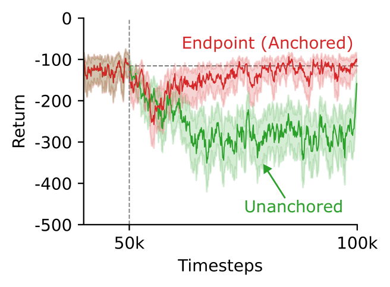

Academic Work
Armin Ashrafi
I am an incoming PhD student at the University of Waterloo, working with Professor Pascal Poupart. Previously, I did my master's degree at the University of Alberta, under the supervision of Prof. Adam White and Prof. Levi Lelis. Prior to that, I finished my bachelor's degree at IAU, in Tehran. My work is focused on continual learning and reinforcement learning.

Output
Publications

Endpoint Replay: Compressing the Recency Buffer in Deep Reinforcement Learning
Reinforcement Learning Journal (RLJ), 2026
A replay buffer compression approach that stores representative transitions derived from the endpoints of n-step trajectory sequences.
@article{panahi2026endpoint,
title = {Endpoint Replay: Compressing the Recency Buffer in Deep Reinforcement Learning},
author = {Parham Mohammad Panahi and Armin Ashrafi and Haoyu Du and Andrew Patterson and Martha White and Adam White},
journal = {Reinforcement Learning Journal (RLJ)},
year = {2026}
}